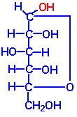

BIC 101 :: Lecture 02 :: OCCURRENCE AND STRUCTURE OF MONOSACCHARIDES

The simplest monosaccharide that possesses a hydroxyl group and a carbonyl group with an asymmetric carbon atom is the aldotriose -glyceraldehyde. (A carbon is said to be asymmetric if four different groups or atoms are attached to it. The carbon is also called as a chiral center).
- Glyceraldehyde is considered as a reference compound and it exists in two optically active forms, D and L
The two families of monosaccharides, D-and L occur based on the configuration of D and L glyceraldehydes. In general, the D-family of sugars occur in nature.
- For monosaccharides with two or more asymmetric carbons, the prefixes D or L refer to the configuration of the penultimate carbon (i.e, the asymmetric carbon farthest from the carbonyl carbon).
- If the hydroxyl group on the penultimate carbon is on the right-hand side of the carbon chain when the aldehyde or ketone group is written at the top of the formula it belongs to the D family and if on the left hand side it belongs to L family. The D or L has nothing to do with optical activity. D sugars may be dextro- or levorotatory.
- The important monosaccharides containing aldehyde group belonging to the D family are
- the aldotetrose - D-erythrose
- the aldopentoses - D-ribose, D-arabinose and D-xylose
- the aldohexoses - D-glucose, D-mannose and D-galactose
- The important monosaccharide belonging to the L-family is L-arabinose.
- The important ketoses are
- Ketotriose - dihydroxy acetone (It is optically inactive since there is no asymmetric carbon);
- the ketotetrose - D-erythrulose;
- the ketopentoses - D-ribulose and D-xylulose
- the ketohexose - D-fructose
Cyclic structure of Monosaccharides:
The monosaccharides exist either in cyclic or acyclic form. There are many evidences to show that the pentose and hexose monosaccharides are present in cyclic form. The evidences are 1. Glucose and other aldoses fail to give the Schiff 's test for aldehydes. 2. Solid glucose is quite inert to oxygen whereas aldehydes are easily auto-oxidizable. 3. Glucose and other aldoses do not form bisulfite or aldehyde ammonia compound. 4.Glucose pentaacetate does not react with hydroxylamine. 5. Presence of two forms of glucose with different physical and chemical properties. 6. X-ray analysis definitely proves the existence of the ring structure and also the size of the ring. 7. Mutarotation.
- When an aldehyde or a ketone group is present in a molecule that also possesses hydroxyl groups, an intramolecular arrangement may occur to form a hemiacetal or a hemiketal, respectively. This intramolecular hemiacetal or hemiketal is the basis for the cyclic structure of the sugars. Hence, Haworth (an English chemist) proposed a cyclic hemiacetal structure that accounts completely for its chemical properties
 |
|
Cyclic Fischer Projection of -D-Glucose |
Haworth Projection of -D-Glucose |
- Two types of ring structures are possible, the five-membered furanose and the six-membered pyranose ring if the carbonyl group interact with hydroxyl group. These names are derived from the parent compounds 'furan' and 'pyran'.
- The most common ring structure for aldohexoses is the pyranose ring structure that involves the first carbonyl carbon and the hydroxyl group attached to the fifth carbon.
- The furanose ring structure is formed by interaction of carbonyl carbon with the hydroxyl group attached to the fourth carbon. This furanose form is less stable than the pyranose strucure and is not very common among aldohexoses.
- Very seldom is a seven-membered ring formed.
- Fructose exists in solution and in compounds as a furanose; however, in the crystalline state only the pyranose ring is believed to exist.
- Ribose occurs as the furanose structure in many important biological compounds.
- A new asymmetric carbon is introduced in the molecule due to this rearrangement. As a result of this new asymmetric centre, two isomers are formed.
- Isomeric forms of monosaccharides that differ only in their configuration about the hemiacetal or hemiketal carbon atom are called anomers and the carbon is referred as anomeric carbon.
- When the newly formed hydroxyl group in C1and the ring are on the same orientation, it is a - anomer.
- When the newly formed hydroxyl group in C1 and the ring are on opposite orientation, it is b - anomer.
While writing the cyclic form (Haworth) of monosaccharides it is sometimes difficult to judge whether an OH group should be above or below the plane of the ring.
A few rules can be followed for writing Haworth's structure for carbohydrates.
- Write the oxygen at the upper right hand corner of the ring structure (pyranose) and the carbons clockwise around the ring. At the fifth carbon it is necessary to rotate the bond to 90o to make the ring closure. For the D-family of sugars, it is customary to write the terminal CH2OH above the plane of the ring.
- If the hydroxyl group or hydrogen atom occurs on the right-hand side of the carbon chain in the linear structure it is placed below the plane of the ring in the cyclic structure.
- Conversely, if the hydroxyl group or hydrogen atom is on the left-hand side of the carbon chain, it is placed above the plane of the ring in the structure formula
Conformational structure:
The six-membered pyranose ring is not actually planar, as suggested by Haworth, but assume usually the stable chair conformation.
Chair form of -D-Glucose |
- The substituents are represented either axially or equatorially.
- The axial substituents project almost parallel with the vertical axis through the ring
- The equatorial substituents project roughly perpendicular to this axis.
- Substituents in the equatorial positions are less sterically hindered by neighbouring substituents. Conformations with their bulky substituents in equatorial positions are favoured.
Derived monosaccharides
The important functional groups present in monosaccharides are hydroxyl and carbonyl groups. The hydroxyl group forms esters, usually with phosphoric acid or is replaced by a hydrogen or amino group. The carbonyl group undergoes reduction or oxidation to produce number of derived monosaccharides.
a) Deoxysugars
- In sugars, the hydroxyl group is replaced by a hydrogen to produce deoxy sugars (devoid of oxygen).
- The important deoxy sugar is 2-deoxy ribose that occurs in deoxy ribonucleic acid.
- Other important deoxy sugars are L-fucose and L. rhamnose. The substitution of the hydroxyl group at C-6 of L. galactose or L.mannose with hydrogen produces fucose or rhamnose respectively.
- L-fucose occurs in the cell wall polysaccharides namely hemicelluloses and L-rhamnose occurs in pectic polysaccharides namely rhamnogalacturonan. These deoxy sugars are also found in the complex oligosaccharide components of glycoproteins and glycolipids.
b) Amino sugars
- The hydroxyl group, usually at C-2, is replaced by an amino group to produce aminosugars such as glucosamine, galactosamine and mannosamine.
- The amino group may be condensed with acetic acid to produce N-acetyl amino sugars, for example, N-acetyl glucosamine.
- This glucosamine derivative is important constituent of many structural polymers (chitin, bacterial cell wall polysaccharides etc.)
c) Polyols (alditols)
- Both aldoses and ketoses are reduced to polyhydric alcohols (polyols) when treated with enzymes, sodium amalgam, and hydrogen under high pressure with catalyst or sodium borohydride.
- Each aldose yields the corresponding alcohol upon reduction
- A ketose forms two alcohols because of the appearance of a new asymmetric carbon atom in the process.
By this reduction process, the following sugars give rise to their respective alcohols under specified conditions.
Glucose Sorbitol
Fructose Sorbitol and mannitol
Mannose Mannitol
Glyceraldehyde Glycerol
Erythrose Erythritol
Ribose Ribitol
Galactose Dulcitol
- Polyols occur in many plant products.
- Sorbitol was first isolated from the berries of mountain ash (Sorbus aucuparia).
- Commercially sorbitol is manufactured by the hydrogenation of glucose.
- Mannitol occurs in many terrestrial and marine plants.
- Potential food applications of polyols include confectionery products, bakery products, deserts, jams and marmalade.
- Sorbitol is an excellent moisture conditioner and is used in pharmaceutical preparations such as elixirs and syrups.
- Sorbitol, as a humectant in creams and lotions helps to stabilize the water content, providing better moisture control.
- The use of sorbitol or xylitol in toothpaste and mouthwashes is highly desirable.
d) Oxidation products
When aldoses are oxidized under proper conditions with different types of oxidizing agents, three types of acids are produced, namely aldonic acids, uronic acids and aldaric acids or saccharic acids.
Aldonic acid
- Oxidation of an aldose with bromine water at neutral pH converts the aldehyde group (C1) to a carboxyl group yields Aldonic acid.
- Hydrobromous acid formed by the reaction of water with bromine acts as an oxidizing agent.
- Ketoses are not readily oxidized by bromine water.
- Aldoses are not only oxidized by bromine water but also by the alkaline iodine solution.
Uronic acid
- When aldoses are oxidised with hydrogen peroxide (H2O2) uronic acids are formed.
- In this reaction only primary alcohol group(C6) is oxidized to carboxyl group, whereas the aldehyde group remains unchanged.
- Uronic acids are constituents of pectic polysaccharides.
Aldaric or saccharic acid
- When aldoses are oxidised with nitric acid, saccharic acids are formed.
- Both aldehyde (C1)and primary alcohol groups (C6) are oxidised to carboxyl groups.
- Glucose on oxidation with nitric acid produces glucaric or glucosaccharic acid.
- The aldaric acid produced from galactose is called as mucic acid.
| Download this lecture as PDF here |